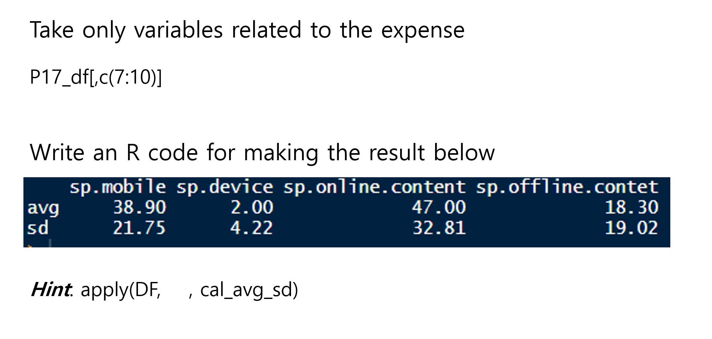
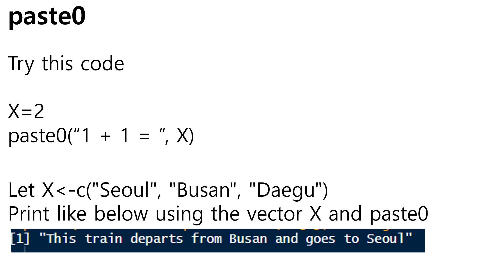
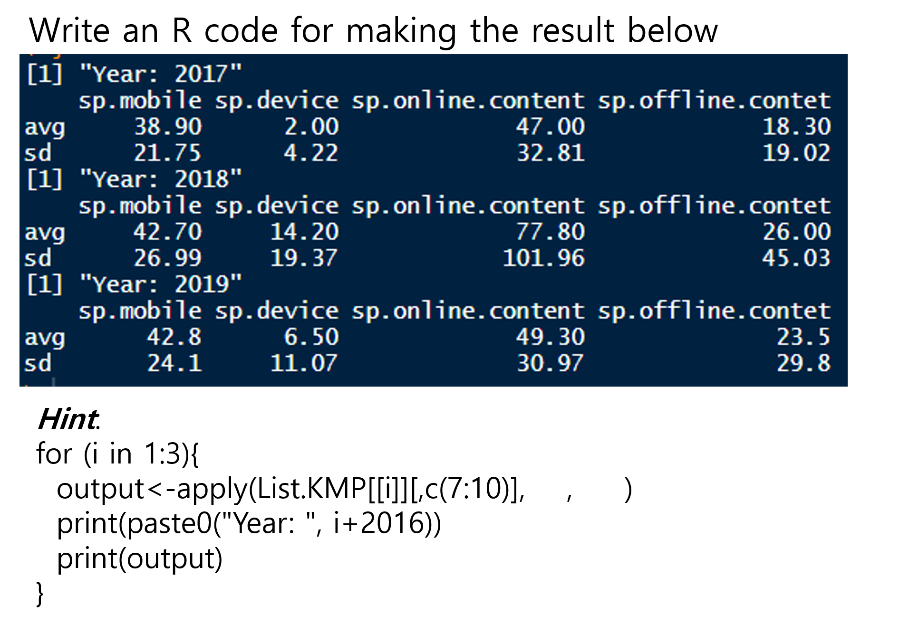

x =5if(x %%2==0) {print('x is an even number') # Performed when the conditional expression is true} else {print('x is odd') # Performed when the conditional expression is false}
[1] "x is odd"
x =8if(x>0) {print('x is a positive value.') # Print if x is greater than 0} elseif(x<0) {print('x is a negative value.') # Prints if the above condition is not satisfied and x is less than 0} else {print('x is zero.') # Prints if all of the above conditions are not met}
[1] "x is a positive value."
x =c(-5:5)options(digits =3) # Set the number of significant digits to 3 when expressing numberssqrt(x)
Warning in sqrt(x): NaNs produced
[1] NaN NaN NaN NaN NaN 0.00 1.00 1.41 1.73 2.00 2.24
sqrt(ifelse(x>=0, x, NA)) # Display negative numbers as NA to prevent NaN from occurring
[1] NA NA NA NA NA 0.00 1.00 1.41 1.73 2.00 2.24
students =read.csv("data/students2.csv", fileEncoding ="CP949", encoding ="UTF-8")
students # Data contains values over 100 and negative values.
name korean english math
1 강서준 100 90 100
2 김도형 90 120 80
3 박정원 90 95 90
4 이상훈 100 85 -100
5 최건우 85 100 100
name korean english math
1 강서준 100 90 100
2 김도형 90 NA 80
3 박정원 90 95 90
4 이상훈 100 85 NA
5 최건우 85 100 100
# ifelse statement, values other than 0 to 100 among the values in columns 2 to 4 are treated as NA.# Increment numbers from 1 to 10 using the repeat statementi =1# starting value of i is 1repeat {if(i>10) { # Break repetition if i exceeds 10break } else {print(i) i = i+1# Increment i by 1. }}
# Increment numbers from 1 to 10 using while statementi =1# The starting value of i is 1.while(i <10){ # repeat as long as i is less than 10print(i) i = i+1# Increment i by 1.}
name korean english math
1 강서준 100 90 100
2 김도형 90 NA 80
3 박정원 90 95 90
4 이상훈 100 85 NA
5 최건우 85 100 100
Functions & Others
# 03 User-defined function: Bundle the desired function #x=5fa =1# Variable to store the factorial valuewhile(x>1) { # loop while x is greater than 1 fa = fa*x # Multiply the value of x by fa and store it back in fa x = x-1# Decrease x value by 1 x}fa
[1] 120
fact =function(x) { # The name of the function is fact, the input is x fa =1# Variable to store the factorial valuewhile(x>1) { # loop while x is greater than 1 fa = fa*x # Multiply the value of x by fa and store it back in fa x = x-1# Decrease x value by 1 }return(fa) # returns the final calculated fa}fact(5) # Prints the result of calculating 5!
[1] 120
my.is.na<-function(x) { # Create a my.is.na function that combines the table(is.na()) functions into onetable(is.na(x))}my.is.na(airquality) # This result is the same as table(is.na(airquality)).
FALSE TRUE
874 44
table(is.na(airquality))
FALSE TRUE
874 44
# 04 Data Cleaning Example 1: Missing Value Handling ## Handling missing values using the is.na functionstr(airquality) # Examine the structure of airquality data.
'data.frame': 153 obs. of 6 variables:
$ Ozone : int 41 36 12 18 NA 28 23 19 8 NA ...
$ Solar.R: int 190 118 149 313 NA NA 299 99 19 194 ...
$ Wind : num 7.4 8 12.6 11.5 14.3 14.9 8.6 13.8 20.1 8.6 ...
$ Temp : int 67 72 74 62 56 66 65 59 61 69 ...
$ Month : int 5 5 5 5 5 5 5 5 5 5 ...
$ Day : int 1 2 3 4 5 6 7 8 9 10 ...
# NA in airquality data is indicated as TRUE, otherwise it is indicated as FALSE. There is a lot of data, so it is selected using the head function.head(airquality)
# Change outlier values in the penalty type to missing valuespatients$blood.type =ifelse((patients$blood.type<1|patients$blood.type>4), NA, patients$blood.type)patients
name age gender blood.type
1 Patient 1 22 1 1
2 Patient 2 20 2 3
3 Patient 3 25 1 2
4 Patient 4 30 NA 4
5 Patient 5 27 2 NA
# Remove all missing valuespatients[!is.na(patients$gender)&!is.na(patients$blood.type), ]
air = airquality # Copy airquality data to temporary storage variabletable(is.na(air$Ozone)) # Check the current number of NAs in Ozone
FALSE TRUE
116 37
# Change outliers to NAair$Ozone =ifelse(air$Ozone<1|air$Ozone>122, NA, air$Ozone)table(is.na(air$Ozone)) # Check the number of NAs after processing outliers (increased by 2)
FALSE TRUE
114 39
# Remove NAair_narm = air[!is.na(air$Ozone), ]mean(air_narm$Ozone) # By removing two outliers, the value is reduced compared to the result using the is.na function.
# create a function of calculating average and standard deviation of a vectorcal_avg_sd<-function(x){ avg.x<-mean(x, na.rm=T) sd.x <-sd(x, na.rm=T) out.vector<-c(avg=avg.x, sd=sd.x)return(round(out.vector,2))}
Let’s apply this function to dataset ‘p17’
# Let's try this functioncal_avg_sd(p17_df$sp.mobile)
avg sd
38.9 21.8



Loop, Function, and Data Manipulation in R: A Dive into the Palmer Penguin Dataset
In the world of data analysis with R, mastering the basics of loops, functions, and data manipulation is essential for any aspiring data scientist. While the tidyverse collection of packages offers powerful tools for these tasks, it’s crucial to first understand the foundational techniques that underpin effective data analysis. This week, we embark on a journey with the Palmer Penguin dataset, focusing on traditional R approaches, saving the tidyverse exploration for our next installment.
The Palmer Penguin Dataset: A Brief History
The Palmer Penguin dataset, introduced by Dr. Kristen Gorman and the Palmer Station, Antarctica LTER, provides a compelling alternative to the classic Iris dataset for data exploration and visualization. Comprising data on 344 penguins across three species (Adélie, Gentoo, and Chinstrap) from the Palmer Archipelago in Antarctica, the dataset includes variables such as species, island, bill length and depth, flipper length, body mass, and sex.
This dataset not only offers rich insights into the biological diversity of Antarctic penguins but also serves as an excellent resource for teaching data science techniques due to its manageable size and complexity.
Data Manipulation with Base R
Before diving into complex manipulations, let’s start by loading the Palmer Penguin dataset. Although it’s available through the palmerpenguins package, we’ll keep our focus on base R functions for this exploration.
Loading the Dataset
# Assuming palmerpenguins is installedlibrary(palmerpenguins)data("penguins")
With the data loaded, let’s proceed to some basic manipulations using base R functions.
palmerpenguins::penguins
# A tibble: 344 × 8
species island bill_length_mm bill_depth_mm flipper_length_mm body_mass_g
<fct> <fct> <dbl> <dbl> <int> <int>
1 Adelie Torgersen 39.1 18.7 181 3750
2 Adelie Torgersen 39.5 17.4 186 3800
3 Adelie Torgersen 40.3 18 195 3250
4 Adelie Torgersen NA NA NA NA
5 Adelie Torgersen 36.7 19.3 193 3450
6 Adelie Torgersen 39.3 20.6 190 3650
7 Adelie Torgersen 38.9 17.8 181 3625
8 Adelie Torgersen 39.2 19.6 195 4675
9 Adelie Torgersen 34.1 18.1 193 3475
10 Adelie Torgersen 42 20.2 190 4250
# ℹ 334 more rows
# ℹ 2 more variables: sex <fct>, year <int>
Subsetting is crucial for isolating parts of the dataset for analysis. In base R, we can use the subset function or the [ operator.
# Subsetting to include only Adélie penguinsadelie_penguins <-subset(penguins, species =="Adelie")# Alternatively, using the bracket operatoradelie_penguins <- penguins[penguins$species =="Adelie", ]
Handling Missing Values
Missing data can skew analysis, making its identification and treatment essential.
# Identifying missing valuessum(is.na(penguins))
[1] 19
# Removing rows with any missing valuepenguins_clean <-na.omit(penguins)
Creating Custom Functions
Custom functions in R amplify the power of data manipulation by encapsulating repetitive tasks.
# A function to summarize penguin measurementssummarize_measurements <-function(data) { summary <-data.frame(Mean_FlipperLength =mean(data$flipper_length_mm, na.rm =TRUE),SD_FlipperLength =sd(data$flipper_length_mm, na.rm =TRUE),Mean_BillLength =mean(data$bill_length_mm, na.rm =TRUE),SD_BillLength =sd(data$bill_length_mm, na.rm =TRUE) )return(summary)}# Applying the function to Adélie penguinsadelie_summary <-summarize_measurements(adelie_penguins)adelie_summary
Loops are essential for iterative operations. In R, for loops allow us to apply operations across elements, rows, or columns in a dataset.
# Calculating mean body mass for each speciesspecies_list <-unique(penguins$species)# Create an empty vectormean_mass_by_species <-numeric(0)for (i inseq_along(species_list)) { species_data <-subset(penguins, species == species_list[i]) mean_mass_by_species[i] <-mean(species_data$body_mass_g, na.rm =TRUE)}names(mean_mass_by_species) <- species_listmean_mass_by_species
Adelie Gentoo Chinstrap
3701 5076 3733
This code iterates through each species in the dataset, calculating and storing the mean body mass.
Let’s use customized function instead.
species_list <-unique(penguins$species)# Create an empty listsummary_by_species <-list(0)for (i inseq_along(species_list)) { species_data <-subset(penguins, species == species_list[i]) summary_by_species[[i]] <-summarize_measurements(species_data)}names(summary_by_species) <- species_listsummary_by_species
Let’s enhance our exploration of the Palmer Penguin dataset by paralleling our original code snippets with their tidyverse counterparts. The tidyverse is a collection of R packages designed for data science that makes data manipulation, exploration, and visualization easier and more intuitive.
Loading the Dataset with tidyverse
First, let’s ensure we have the tidyverse and palmerpenguins packages loaded. If you haven’t installed these packages, you can do so using install.packages("tidyverse") and install.packages("palmerpenguins").
library(tidyverse)
── Attaching core tidyverse packages ──────────────────────── tidyverse 2.0.0 ──
✔ dplyr 1.1.4 ✔ readr 2.1.5
✔ forcats 1.0.0 ✔ stringr 1.5.1
✔ ggplot2 3.5.1 ✔ tibble 3.2.1
✔ lubridate 1.9.3 ✔ tidyr 1.3.1
✔ purrr 1.0.2
── Conflicts ────────────────────────────────────────── tidyverse_conflicts() ──
✖ dplyr::filter() masks stats::filter()
✖ dplyr::lag() masks stats::lag()
ℹ Use the conflicted package (<http://conflicted.r-lib.org/>) to force all conflicts to become errors
library(palmerpenguins)
Subsetting Data with dplyr
With dplyr, subsetting becomes more readable:
# Subsetting to include only Adélie penguins using dplyradelie_penguins <- penguins %>%filter(species =="Adelie")
Handling Missing Values with tidyverse
The tidyverse provides a straightforward approach to dealing with missing values:
# Removing rows with any missing value using dplyrpenguins_clean <- penguins %>%drop_na()
Creating Custom Functions and Applying them into dataset
While base R functions are powerful, integrating them with tidyverse functionalities can make your workflows even more efficient:
# Using dplyr and purrr to summarize measurementssummarize_measurements <-function(data) { data %>%summarise(Mean_FlipperLength =mean(flipper_length_mm, na.rm =TRUE),SD_FlipperLength =sd(flipper_length_mm, na.rm =TRUE),Mean_BillLength =mean(bill_length_mm, na.rm =TRUE),SD_BillLength =sd(bill_length_mm, na.rm =TRUE))}# Applying the function to Adélie penguinsadelie_summary <- adelie_penguins %>%summarize_measurements()adelie_summary
# Calculating mean body mass for each species with dplyrmean_mass_by_species <- penguins %>%group_by(species) %>%summarise(MeanBodyMass =mean(body_mass_g, na.rm =TRUE))mean_mass_by_species
# A tibble: 3 × 2
species MeanBodyMass
<fct> <dbl>
1 Adelie 3701.
2 Chinstrap 3733.
3 Gentoo 5076.
By incorporating tidyverse techniques, we can make our code more concise and readable, especially for those new to programming or R. The tidyverse syntax is designed to be intuitive, allowing you to more easily understand and articulate what your code is doing, which is particularly beneficial when sharing your work with others or when collaborating on data science projects.
Using purrr for Advanced Data Manipulation
purrr enhances functional programming within the tidyverse ecosystem, providing tools for working effectively with lists and functional programming paradigms. Here’s how we could use purrr in conjunction with dplyr for a task similar to our mean body mass calculation:
Calculating Mean Body Mass by Species with purrr
We can use purrr’s map functions to apply operations across elements in a list, which is particularly useful for more complex or nested operations. While the direct calculation of mean body mass by species is more straightforward with dplyr alone, let’s consider a scenario where purrr demonstrates its utility:
library(tidyverse)# Splitting the data by speciesspecies_split <-split(penguins, penguins$species)# Calculating mean body mass for each species using purrrmean_mass_by_species <-map_dfr(species_split, ~summarise(.x, MeanBodyMass =mean(body_mass_g, na.rm =TRUE)))mean_mass_by_species